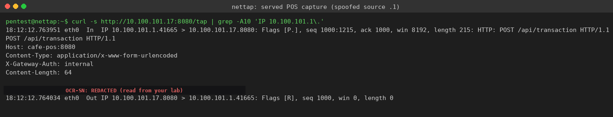
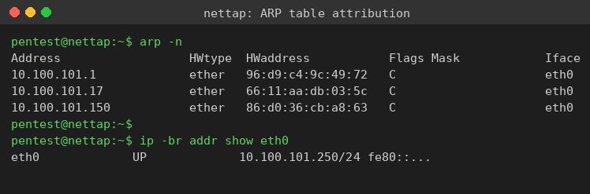
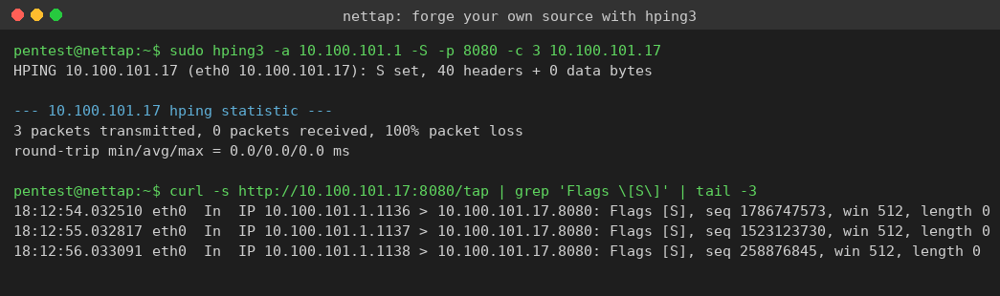

Exercise 10A: Who Sent This?
Engagement Status
Client: Bean & Byte Cafe Role: Security Auditor Phase: Reconnaissance Service Enumeration Exploitation Detection
What you know so far:
- You have mapped every device on the cafe network and baselined ARP behavior
- You have already seen that MAC addresses can be forged with ARP spoofing
- The POS terminal is receiving HTTP requests that claim to come from the cafe gateway
- The gateway only routes traffic, so it should never POST to the POS application
Your task: Read the destination-side capture on the POS terminal, identify the packets whose source IP is forged to look like the gateway, pull the flag token out of the payload, and use the ARP table to name the device that really sent them.
Objective
Observe traffic arriving at the POS terminal, recognize packets with a spoofed source IP matching the gateway, extract the embedded flag token, and confirm with the ARP table that the IP address alone cannot be trusted to identify the sender. Then forge your own source address with hping3 and watch it arrive in the same capture.
Difficulty: Beginner Estimated time: 45 minutes
Background: Why a Source IP Lies
IP Addresses Are Not Identity
Every IP packet carries a source address in its header. Nothing in the IP protocol forces that address to be true. A host with raw-socket access can write any value it wants into the source field before the packet leaves the wire. The receiver has no built-in way to know the address was forged, so any service that trusts a source IP for authentication or filtering is trusting a value the sender chose freely.
Source-IP spoofing is the act of sending packets with a forged source address. Attackers use it to impersonate a trusted host, to bypass IP allow-lists, to hide the real origin of an attack, and to bounce reflected traffic off third parties.
Why You Read the Capture From the Destination
A forged unicast packet still has to reach its real destination, otherwise the attack accomplishes nothing. On a switched or bridged network, a passive third host sitting off to the side does not receive that unicast: the switch only forwards it toward the destination MAC. A plain tcpdump on the network tap will not show the rogue host talking to the POS.
The destination, on the other hand, receives every packet addressed to it. In this lab the POS terminal runs its own packet capture of the HTTP traffic arriving on its service port and serves the running log over HTTP so an analyst can read it. The capture is the ground truth: the forged source IP and the payload are both visible in it.
What a Forged Source Looks Like on the Wire
In a tcpdump line the source appears to the left of the > and the destination to the right:
When the source field reads as the gateway address but the request is something the gateway would never send, the source has been forged. The MAC layer tells the real story, and you compare it against the ARP table to attribute the true sender.
Tools You Will Need
| Tool | Purpose | Example |
|---|---|---|
curl |
Read the served destination-side capture | curl -s http://<pos>:8080/tap |
grep |
Filter the capture for the spoofed source or token | grep 'IP <gateway>\.' |
arp |
View the ARP table to attribute the real sender | arp -n |
tcpdump |
Capture with link-layer headers on the tap | sudo tcpdump -i any -enn 'tcp port 8080' |
hping3 |
Forge your own source address to prove the concept | sudo hping3 -a <ip> -S -p 8080 <target> |
All tools are pre-installed on the network tap.
Flag Progress
The flag token is carried in the payload of the spoofed packets and is prefixed with OCR-SN:. Use only the value after the prefix.
| Source | Token | Found? |
|---|---|---|
| Spoofed packet payload in the POS capture | ________ |
Assembled flag format: OCR{token}
Step 0: Connect to the Network Tap
Source-IP analysis happens at Layer 3 inside the cafe broadcast domain, not over the VPN. Blackridge Security has placed a network tap on the cafe switch at offset .250. SSH into it so your capture and ARP tools run on the same subnet as the POS terminal.
SSH into the network tap
Replace the placeholder with the tap address for your subnet (offset .250). The credentials are pentest / Security1#.
Once connected, your prompt changes to pentest@nettap. Every command below runs from here.
Step 1: Read the Destination-Side Capture
The POS terminal serves its running packet capture at /tap on port 8080. Pull it and look for the suspicious gateway-sourced requests. The rogue host fires every 15 to 25 seconds, so re-run the command for a minute or two if nothing has arrived yet.
Pull the served capture and grep for gateway-sourced packets
Replace <pos-ip> with the POS terminal address (offset .17) and <gateway-ip> with the gateway address (offset .1).
You should see HTTP POST requests whose source is the gateway IP, with a token string in the body.
On the lab subnet the POS terminal is 10.100.101.17 and the gateway is 10.100.101.1. The capture shows the forged source clearly:

Read the tcpdump line carefully. The source 10.100.101.1.41665 > 10.100.101.17.8080 claims the packet came from the gateway, but the gateway is a router that would never POST /api/transaction to the POS. The packet is forged. The body carries:
The token after the OCR-SN: prefix is the value you wrap as your flag; read it from your own capture.
Output Interpretation
The In direction and the immediate Flags [R] reply from the POS are normal. The POS has no open socket expecting that connection, so it answers the unsolicited data packet with a TCP reset. The forged request still reached the destination and was captured, which is all the attacker needed to deliver the payload and all you need to read it.
Step 2: Attribute the Real Sender With the ARP Table
The source IP says "gateway," but a forged IP does not change the Ethernet frame the packet rode in on. Use the ARP table to learn which MAC the gateway IP really maps to, then compare against the rogue device.
Populate and read the ARP table
Ping the gateway, the POS, and the rogue device so their MAC bindings land in the local ARP table, then read it.
Each line maps an IP to the hardware (MAC) address that answered for it.

The gateway IP 10.100.101.1 resolves to MAC 96:d9:c4:9c:49:72, the real cafe gateway. The rogue device sits at 10.100.101.150 with its own MAC 86:d0:36:cb:a8:63. A spoofer can forge the source IP field, but it cannot make the gateway host actually originate the traffic. The combination of a gateway-sourced packet that the gateway would never send, plus an IP-versus-MAC story that does not add up, is what exposes the forgery.
Why This Matters
Earlier phases showed that MAC addresses can be faked with ARP spoofing. Now you have seen that IP addresses can be faked too. When both layers can be forged, any control that trusts an address alone is fragile. Real authentication has to come from something the sender cannot freely choose, such as a cryptographic credential.
Step 3: Forge Your Own Source Address
Reading someone else's forged traffic is one thing. Forging it yourself makes the lesson concrete. From the tap, send packets that claim to come from the gateway and watch them land in the same served capture.
Send spoofed SYN packets with hping3
The -a flag sets a forged source address, -S sends a SYN, -p sets the destination port, and -c limits the count. Replace the placeholders with the gateway and POS addresses for your subnet.
The 100% packet loss is expected: the SYN-ACK replies go to the gateway you impersonated, not back to you.
Confirm your forged packets arrived in the capture
Re-read the served capture and filter for SYN packets sourced from the gateway IP.
Your three forged SYNs appear with the gateway as the source, even though you sent them from the tap.

On the lab subnet the forged packets read back as IP 10.100.101.1.<port> > 10.100.101.17.8080: Flags [S]. You generated them from 10.100.101.250, yet the capture attributes them to 10.100.101.1. Nothing on the receiving side can tell from the IP header alone that you were the real sender.
Analysis Questions
Think about these as you work through the exercise:
-
Trust boundary: The POS rejected the forged packets with a TCP reset because no socket was listening. What would happen if a service did trust the source IP, for example an admin endpoint that only accepts requests from the gateway address?
-
Attribution limits: You used the ARP table to attribute the real sender. Would that still work if the spoofer were on a different subnet, on the far side of a router? Why or why not?
-
Detection: Reverse path filtering (uRPF) drops packets whose source address could not legitimately arrive on the interface they came in on. Where in the cafe network would you enable it, and what would it have stopped here?
-
Layering: You can forge a source IP and you can forge a MAC. Which forgery is easier for a defender to catch on a local segment, and which control catches it?
Wrapping Up
By completing this exercise, you have learned to:
- Read a destination-side packet capture to see forged unicast traffic a passive host would miss
- Recognize a spoofed source IP by the address that should never originate the request
- Use the ARP table to attribute the real sender behind a forged source address
- Forge your own source address with hping3 and confirm it on the wire
- Explain why an IP address alone cannot authenticate a sender
Flag tokens in service responses are prefixed with OCR-SN:: use only the value after the prefix when assembling the flag.
Submit your flag: OCR{________________}
Additional Resources
man hping3: Packet crafting and source-address spoofingman tcpdump: Reading capture output and link-layer headers- RFC 2827 (BCP 38): Network ingress filtering to defeat source-address spoofing
- RFC 3704: Ingress filtering for multihomed networks (uRPF modes)